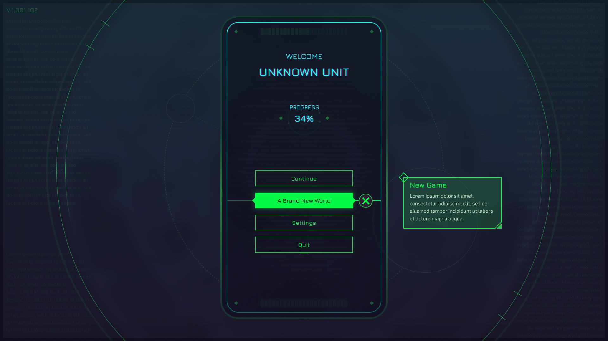
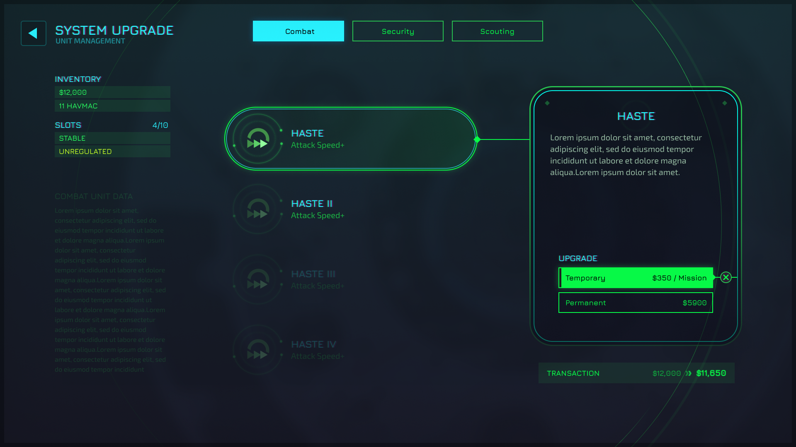
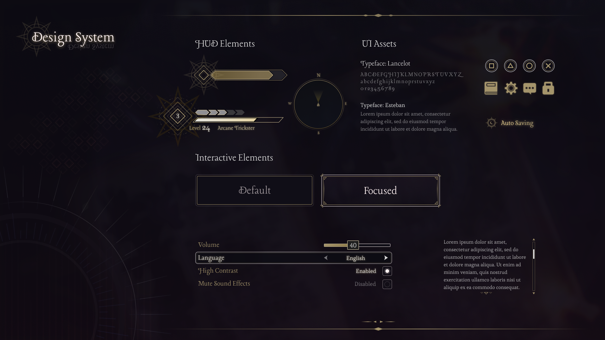
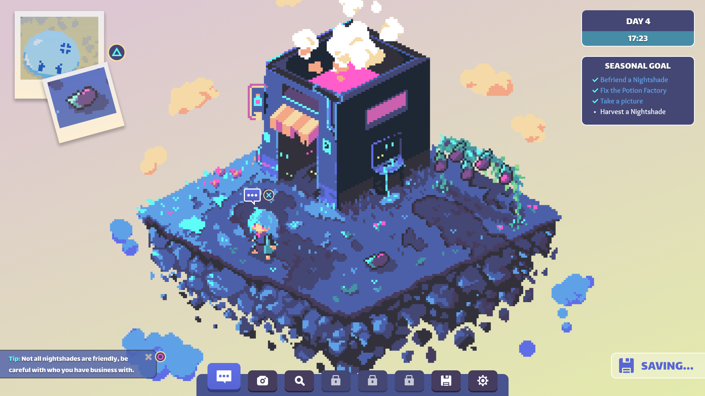

<!DOCTYPE html>
<html lang="en-US">

<head>
  <!-- Google tag (gtag.js) -->
  <script async src="https://www.googletagmanager.com/gtag/js?id=G-L773T9W6EX"></script>
  <script>
    window.dataLayer = window.dataLayer || [];
    function gtag() { dataLayer.push(arguments); }
    gtag('js', new Date());

    gtag('config', 'G-L773T9W6EX');
  </script>

  <Title>Danilo's Touch</Title>
  <meta name="viewport" content="width=device-width, initial-scale=1.0">
  <link rel="stylesheet" href="css/style.css">
  <link rel="stylesheet" href="css/modal.css">
  <link rel="stylesheet" href="css/preloader.css">
  <link rel="preconnect" href="https://fonts.googleapis.com">
  <link rel="preconnect" href="https://fonts.gstatic.com" crossorigin>
  <link href="https://fonts.googleapis.com/css2?family=Noto+Sans+Mono&display=swap" rel="stylesheet">
  <link href="https://fonts.googleapis.com/css2?family=Noto+Sans+Mono:wght@500&display=swap" rel="stylesheet">
  <link rel="icon" type="image/png" href="img/heart.png">
</head>

</html>
<div class="preloader">
  
</div>

<body>
  <div class="header" id="stickyHeader">
    <div class="link-wrapper">
      <a href="index.html" class="linkText">Home</a>
      <div class="linkTextHighlight">Interfaces</div>
      <a href="personal.html" class="linkText">Art</a>
      <a href="accessibility.html" class="linkText">Resources</a>
      <a href="curriculum.html" class="linkText">About</a>
    </div>
  </div>

  <div class="bg-wrapper">
    <div class="curriculum">
      <div class="dataRowLarge">
        <div class="accentText">Unknown Unit</div>
      </div>
      <div class="description">
        An exploration of the use of solid green as the primary colour and the use of sharp edges and rouded corner in
        the same UI.
      </div>

      <br>

      <div class="modal-wrapper">
        
        
        
      </div>
    </div>
  </div>

  <div class="bg-wrapper">
    <div class="curriculum">
      <div class="dataRowLarge">
        <div class="accentText">Discarded Devil</div>
      </div>
      <div class="description">
        A design exploration of a desaturated, dark fantasy inspired interface.
      </div>

      <br>

      <div class="modal-wrapper">
        
        
        
      </div>
    </div>
  </div>

  <div class="bg-wrapper">
    <div class="curriculum">

      <div class="dataRowLarge">
        <div class="accentText">Nightshade Inc.</div>
      </div>
      <div class="description">
        An early exploration of the UI Art style for a fictional game.<br>
        Tried to keep the design loose to try different game ideas.
      </div>

      <br>

      <div class="modal-wrapper">
        
        
        
      </div>

    </div>
  </div>

  <div id="myModal" class="modal">
    
  </div>

  <div class="scrollToTop" id="scrollToTop">
    
  </div>

  <div class="footer">2024 | Danilo Enju | All content and trademarks are property of their respective owners.</div>

</body>
<script src="js/preloader.js"></script>
<script src="js/modal.js"></script>
<script src="js/scrollTrigger.js"></script>

</html>